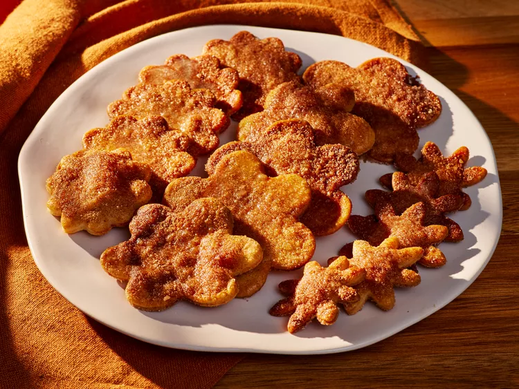

Pie Crust Cookies
Description
These delicous crusty and buttery cookies will feel like fall has come to your kitchen. With the help of cinnamon you won't believe how great they will taste.

Ingredients
- 1 premade pie crust
- all purpose flour for dusting
- 1 large egg
- 1 teaspoon whole milk
- 2 tablespoons granulated sugar
- 3/4 teaspoon ground cinnamon
- 1/8 teaspoon salt
- 1 1/2 tablespoons unsalted butter, melted and cooled
Directions
- Preheat the oven to 375 degrees F (190 degrees C).
- Roll premade pie crust to 1/8-inch thickness on a lightly floured work surface, and cut
using desired cookie cutter shapes.
- Transfer cut-outs to prepared baking sheets, leaving about a 1/2-inch space between
each cookie. Repeat with remaining dough, rerolling scraps once.
- Whisk together egg and milk in a small bowl until combined. Using a pastry brush, brush
the tops of each cookie evenly with egg mixture
- Whisk together sugar, cinnamon, and salt in a small bowl until evenly combined, sprinkle
evenly over brushed cookies.
- Bake cookies in the preheated oven until the edges and bottoms of cookies just become
golden brown, about 15 minutes.
- Remove from oven and brush tops of each cookie lightly with melted butter, let cool
slightly on baking sheet, about 5 minutes. Serve warm.
- Enjoy your freshly baked cookies. I would suggest combining them with coffee
or hot chocolate.
Main Menu